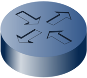

4.6.- Enrutadores.

El enrutador o router es el equipo de interconexión de redes que se encarga de conectar dos redes diferentes.
Es un equipo de interconexión de capa 3 o nivel de red. Los enrutadores dirigen el tráfico de red, buscando el mejor camino para llegar al destino. Trabajan con paquetes que contienen la información de las direcciones IP de origen y destino, así como los propios datos del mensaje.
Dada la popularidad del nombre en inglés, usaremos indistintamente router, enrutador o encaminador, para que te sea más fácil familiarizarte con el término.
Hay que destacar que cada puerto o interfaz del router se conectará a una red diferente, por tanto todos los router deben tener, al menos, dos direcciones IP ya que pertenecerán, al menos, a dos redes diferentes.
Hay que recordar que un router además de las funciones de conectar redes diferentes y de la funciones de enrutamiento, es capaz de realizar filtrados, trasladar direcciones, realizar enlaces y actuar como un conmutador. Para realizar sus funciones un enrutador necesita guardar información de las redes a las que puede acceder, esto lo hace a través de la tabla de enrutamiento, que no es más que una tabla donde se guarda cómo se llega de una red a otra, utilizando qué interfaz.
Los algoritmos de enrutamiento que se utilizan permiten trabajar con rutas estáticas y con rutas dinámicas. Se habla de rutas estáticas cuando en el enrutador se guarda la información de forma permanente y sin cambios de las rutas que pueden seguir los paquetes. Las rutas estáticas son útiles cuando existe una sola forma de conectarse a Internet ya que el paquete siempre seguirá el mismo camino. Las rutas dinámicas serán útiles cuando tengamos varias posibilidades para conectarnos a otra red, en este caso es conveniente que el enrutador pueda recabar información de la red para así, elegir el mejor camino posible.
Los enrutadores necesitan configurarse para que funcionen adecuadamente, en la configuración se suele definir las direcciones IP de cada una de las interfaces, se incluye información de las máscaras de subred, se especifica si se va a utilizar alguna puerta de enlace, qué servidores DNS se van a utilizar, si se va a dar servicio de asignación de direcciones IP por medio de DHCP, etc. En algunos casos se puede configurar qué puertos estarán abiertos, y en el caso de los enrutadores inalámbricos las características de configuración de las redes inalámbricas, que veremos un poco más adelante.
La mayor parte de las veces utilizaremos el router para conectarnos a Internet, ya sea por ADSL o por cable. En estos casos los enrutadores suelen venir configurados por los proveedores de servicios de Internet, y nosotros poco tendremos que configurar, estos enrutadores se llaman router ADSL o router de cable
En algunas ocasiones escucharás hablar de router neutro, esto es una terminología que se utiliza para diferenciar al router que une dos redes locales del que permite conectar a Internet.
Usualmente, cuando utilices un enrutador como parte de la red de tu casa o de tu trabajo, éste será el que te permita conectarte a Internet, por tanto en la configuración del ordenador, habrá que poner la dirección del enrutador como puerta de enlace, ya que el ordenador mandará a esta puerta de enlace todos los paquetes que no sean propios de la red y por tanto será la "puerta" para salir a Internet. En estos casos los enrutadores utilizan el mecanismo NAT o de traducción de dirección de red que permite intercambiar paquetes entre dos redes que se asignan mutuamente direcciones incompatibles. Estos conceptos y la configuración de los parámetros necesarios en el sistema operativo los verás en sucesivas unidades de trabajo.
Para saber más
Para ampliar conocimientos puedes leer el siguiente artículo sobre los routers.